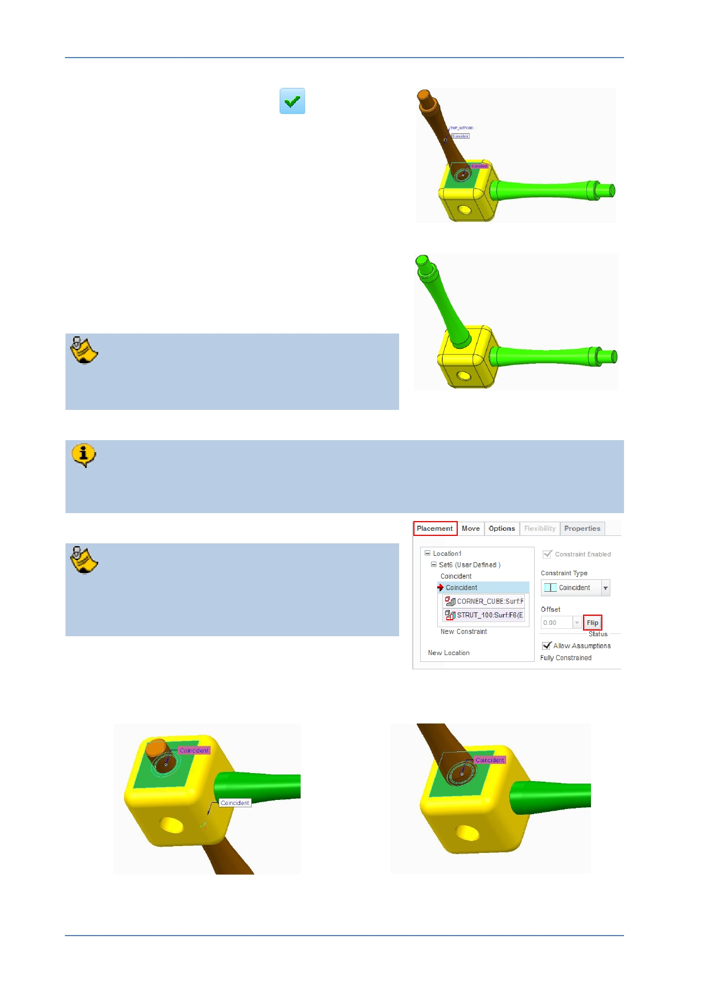

PTC Academic Program
5. Click Complete Component
to complete
the placement of the second strut and add a
new entry to the model tree.
The assembly now has one corner cube and two
struts.
Continue adding struts and corners to create
a larger assembly.
You do not have to create the same
assembly as shown here.
Make sure you build your model the “correct way up”. This helps with rendering
later. Check by selecting default, isometric or trimetric view.
You may find it useful to use Flip from the
Placement tab in order to flip the orientation
of a constraint.
Before Flip
After Flip
© 2012 PTC
Creo Parametric 2.0 Primer
Page 79